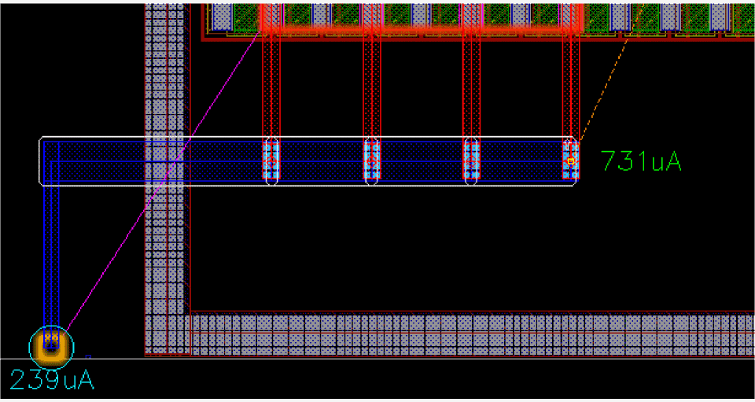

Tapering in SDR
Use the tapering feature to show how each segment can be optimized by SDR. To adjust the width and taper each segment independently:
- Select a net from the Navigator Assistant or the EAD Browser.
-
Choose Create – Wiring – Wire.
-
Select an instance from where you want to start creating the wire.
By default, the taper mode isnoTaper. This means that the wire width remains constant even after connecting the pins.
 -
To enable tapering, press
}.
When tapering is enabled, the width of each segment is independently adjusted to match the estimated current value. The following figure shows how a wire width is adjusted when tapering is enabled.
When there are no additional connected shapes for the edited wire and you continue to move the mouse pointer in the same direction, then after crossing the last target, the tapering of the wire moves in the reverse direction, as shown in the following figure.
Environment variable: weSdrTaperMode
Return to top